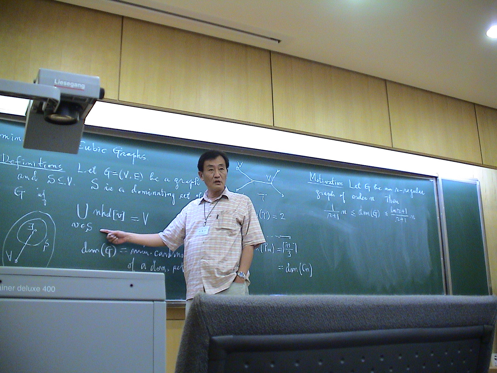
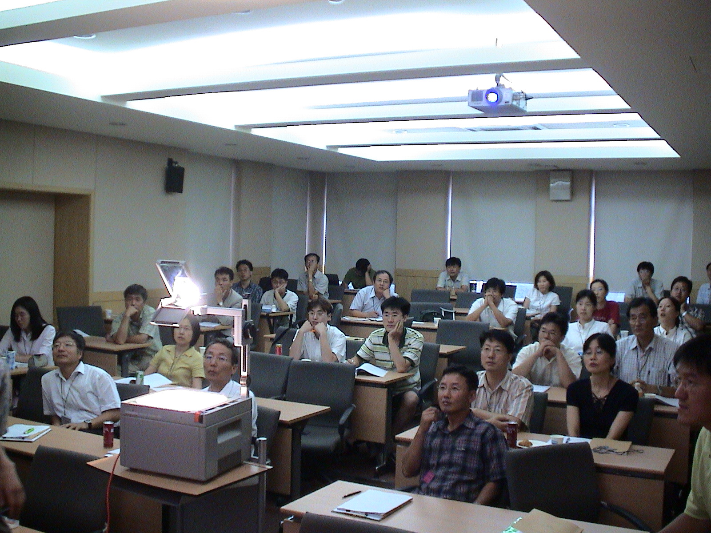

2005 COMBINATORIAL MATHEMATICS CONFERENCE
2005년 8월 8일(월) ~ 8월 10일(수)
연세대학교 이과대학 수학과 과학관 225호
주관
: 연세대 BK 연구팀, 후원 : 대한수학회 전산수학분과
COMBINATORIAL MATHEMATICS CONFERENCE, 2005
Aug. 8 - Aug 10, 2005
Yonsei University, Seoul, Korea
◐ 장소 : 연세대학교 이과대학 수학과 과학관 225호
◐ Schedule:
8월8일(월)
9:00 -- 9:30 등록
9:30 -- 10:00 격려사 대한수학회장 민경찬 교수
축사 대한수학회 전산분과위원장 곽진호 교수
환영사 연세대학교 수학과 장건수 교수
좌장 : 김동수교수
10:10 -- 11:00 초청강연 이재진 교수(한림대)
An algorithmic sign-reversing involution for special rim-hook tableaux
11:10 -- 12:00 김현광 교수(포항공대)
Recent developments in super-imposed codes
12:00 -- 2:00 점심
2:00 -- 3:30 초정 집중강연 박형주 교수(KIAS)
Combinatorial study of algebro-geometric objects via monomial ideals I
3:40 -- 4:20 김장수(KAIST)
The number of j-sets
4:20 -- 5:00 박용성 (포항공대)
Weighted complexities of graph products and bundles
5:10 -- 5:50 신희성(KAIST)
Combinatorial objects for q-exponential functions
5:50 -- 6:30 양정모 박사(포항공대)
Linear algebraic approach on real -game
6:30 -- 7:00 이재운 교수(영남대)
The chromatic numbers of double coverings of a graph
8월9일(화)
좌장 : 박승경 교수
9:30 -- 10:20 초청강연 곽진호 교수(포항공대)
Tessellations and Regular maps
10:30 -- 11:00 김동석 박사(경북대)
The quantum sl(3) invariants of cubic bipartite planar graphs
11:00 -- 11:30 신영희 교수(영남대)
Branched cyclic coverings over the sphere
11:30 -- 1:30 점심
1:30 -- 3:00 초정 집중강연 박형주 교수(KIAS)
Combinatorial study of algebro-geometric objects via monomial ideals II
<Informatics Special Session>
3:10 -- 4:00 초청강연 노경태 교수(연세대)
Introduction to Cheminformatics
4:10 -- 5:00 초청강연 이원태 교수(연세대)
Structural genomics and bioinformatics
5:10 -- 6:00 초청강연 박종화박사(생명공학연구원)
IT + BT = BIT ==> Bioinformatics ==> Personal Genomics ==> BioRevolution
6:10 -- 7:00 초청강연 김상수 교수(숭실대)
Bioinformatics for functional genomics
8월10일(수)
좌장 : 이재운 교수
9:30 -- 10:20 초청강연 김동수 교수(KAIST)
10:30 -- 11:20 김선홍 교수(조선대)
An upper bound for the exponential function
11:30 -- 12:10 권영수 박사(포항공대)
Classification of reflexible regular embeddings and self-Petrie dual regular embeddings of complete bipartite graphs
12:10 -- 2:00 점심
2:00 -- 3:30 초정 집중강연 박형주 교수(KIAS)
Combinatorial-Algebraic Cryptosystems and Polynomial-based Cryptography
3:40 -- 4:30 조수진 교수(아주대)
Unipotent representation of finite general linear groups
4:40 -- 5:20 서승현 박사(KAIST)
Refined Enumeration of Minimal Transitive Factorizations of Permutations
5:20 -- 6:00 이향숙 교수(이화여대)
Tate pairing implementation for hyperelliptic curves
6:00 -- 6:40 이호규 박사(연세대)
Multikey distribution
************************************
행정사항 :
1. 연구비규정에 의거하여 다음 지원 사항을 말씀드립니다.
지원경비 : 참여하시는 모든 분들게 왕복여비(신용카드계산서, 이름이 나와 있는 영수증, 기차,항공,고속버스표. 참고로 영수증이 없으면 지원 불가능함을 양지하여 주시기바랍니다.)를 지원하여 드립니다.
2. 지방에서 오시는 분들 모두의 숙박은 아래와 같이 정해져있고 제가 부담합니다.
--- 교수급 1인 1실 --- 기타 2인 1실
현재 8월7일부터 8월 10일 아침까지의 숙소 TENTATIVE 예약상황입니다.
알렌관 :
301호 곽진호 교수님
302호 이재운교수님
303호 양정모, 박용성박사님
307호 최영빈박사님
상남관 :
420호 신영희교수님
501호 김동수교수님
506호 김현광교수님
507호 김창수, 신희성박사님
508호 김동석, 서승현박사님
509호 김선홍교수님
KAIST의 김선해, 유재일군 : 월요일부터 예약 되었음 8월8일 상남관 410호, 8월9일 408호
여분의 방이 하나 있습니다.
두 곳이 아래 위로 붙어있고 위치는 연세대학교 홈페이지를 참고하시기 바랍니다.
http://www.yonsei.ac.kr/contents/intro/campusmap.html
변경이 필요하신분은 메일로 8월 2일 저녁까지 알려주시기 바랍니다. (sparky@yonsei.ac.kr)
금년에는 화요일 오후에 informatics afternoon 이라 하여 수학과 관련된 biomath, cheminformatics를 소개하는 시간을 마련하였습니다. 이 분야의 전문가들을 모시고 수학이 다른 분야에서 어떻게 필요로 하는지에 대한 귀중한 시간이 되었으면 합니다. 아직 한 분 또는 두 분이 더 늘어날 수도 있습니다.
◐ 분야 : 조합론 및 그 응용과 관련된 모든 분야. 조합론과 이산수학의 교육과 관련된
분야
◐
Due
day : 초록 제출, 7월 1일 까지
발표 논문 제출 (프로시딩) 7월 15일 까지
◐
논문제출 및 기타
질문 : sparky@yonsei.ac.kr
◐ Organizing committee:
김동수교수(과기대)
박승경교수(연세대) 이상구교수(성균관대) 이재운교수(영남대)
◐ Homepage: 대한수학회 홈페이지 http://www.kms.or.kr/
게시판 -> 학술행사, 조합론 학술대회 또는
http://matrix.skku.ac.kr/conference/2005Combnatorics.htm 참조
◐ Related site: Combinatorics Workshop, 2004
************************************
2004년 8월 17일 (화) 오후 3:40 -- 4:20 (invited speaker) 이창우교수(서울시립대)
Domination in cubic graphs 연구 발표 당시 모습
< 지난 겨울 돌아가신 이창우교수님을 추모하며 ... >
 
{kind=link}